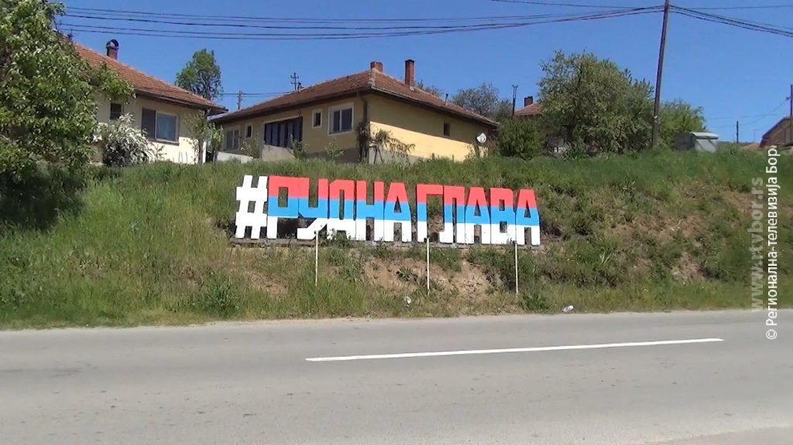

Smestena u brdovitom predelu istocne Srbije, u opstini Majdanpek, Rudna Glava predstavlja jedinstveno mesto gde se priroda i istorija susrecu. Okruzena sumama, livadama i netaknutim pejzazima, pruza mir, tisinu i autentican dozivljaj zivota daleko od gradske buke.
Ovo selo je poznato po jednom od najstarijih rudnika bakra u Evropi, koji svedoci o bogatoj proslosti dugoj vise hiljada godina. Upravo ovde zapocinje prica o rudarstvu na ovim prostorima.

Vekovima stara tradicija.
Iako je selo "osnovano" u XVIII veku, podrucje je naseljeno jos u praistoriji — tu se nalazi poznati rudnik bakra star oko 7000 godina!
U vreme osmanske vlasti formira se selo Rudna Glava kao stalno naselje. Stanovnistvo se naseljava u ovom podrucju zbog prirodnih resursa i povoljnih uslova za zivot.
Sa razvojem rudarstva u istocnoj Srbiji, posebno u okolini Majdanpeka, selo dobija na znacaju. Stanovnici se bave rudarskim poslovima i pratecim delatnostima, sto doprinosi ekonomskom razvoju.
Izgradnja puteva, elektrifikacija i razvoj industrije u regionu menjaju nacin zivota. Selo ostaje povezano sa rudarskom tradicijom, ali se uvode i savremeni uslovi zivota.
Danas Rudna Glava predstavlja spoj bogate istorije i netaknute prirode. Poznata je po svom arheoloskom znacaju, mirnom okruzenju i autenticnom seoskom ambijentu koji privlaci posetioce.
Svaki kutak sela krije nesto posebno — od seoske crkve do netaknute prirode.
Pravoslavna crkva podignuta 1900. godine sa freskama koje krase unutrasnjost.
Pesacka staza do Garvana, najviseg vrha planine Mali krs (929m) nudi nezaboravan pogled.
Jedno od najstarijih rudarskih nalazista u Evropi, staro oko 7000 godina. Svedoci o pocecima metalurgije i zivota na ovom prostoru.
Prerast Suplja stena je najvisi prirodni kameni most sa impozantnom visinom od 44,8m. Predstavlja spomenik prirode.
Pogledajte neke od slika naseg sela!
Prijavite se za nas newsletter i saznajte prve o manifestacijama, tradicionalnim proslavama i novostima iz sela.
Rudna Glava
19257 Majdanpek
Srbija